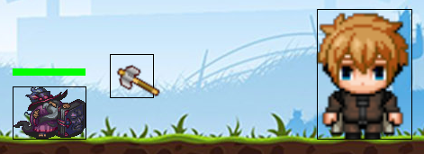
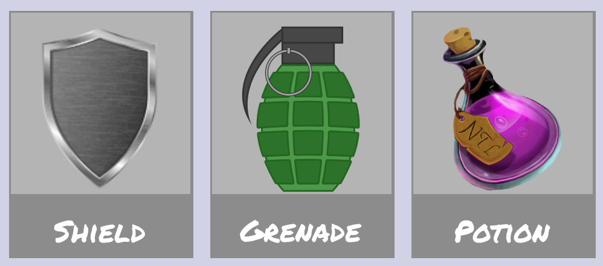

Documentation
Introduction
SpaceShooter est un jeu de tir en 2D vue de face. Il est développé en python et utilise le module EZ, qui a pour but de simplifier la librairie pygame et été imposer au projet dans le cadre de l'enseignement de NSI.
Installation
Si vous ne possèdez pas python, ou une version inférieur à python3, il vous faudra l'installer.
Si vous ne possèdez pas pygame:
$ pip install pygame
Si vous souhaitez outilisez l'outile décomposeur de gif, il vous vaudras aussi le module Pillow:
$ pip install Pillow
Utilisation
Démarrage
Pour démarrer le jeu, il suffit de lancer le script main.py dans le terminal. Le fichier se trouve dans le dossier sources.
Contrôles
Dans les menus
- Echap: revenir au menu précédent
- Click Gauche: Pour naviger dans les menus
En Jeu
- Click gauche/ Entrer: Tirer
- q / Flèche gauche: Bouger le personnage vers la gauche
- d / Flèche droite: Bouger le personnage vers la droite
- Espace: Sauter
- a: Utiliser l'équipement Potion
- e: Utiliser l'équipement Grenade
- z: Réparer l'équipement bouclier
- Echap: accèder au Menu en Jeu
Crédits
- Programation : Heilmann Jonathan
- Graphisme / Equilibrage : Schmitt Nicolas
- Autres
Fonctionement
Comment est coder le Jeu ? Comment se déplace le Joueur ? Comment les monstre bouge t'il ? Comment sont gérer les dégats ? Ou encore, comment marche la navigation au sein des menus ? ...
Dans cette Partie nous veront donc de quel manière le Jeu est construit.
Introduction
SpaceShooter est coder en grande partie en programation orienté objet. Il est composé de plusieur class principale tel que :
- Joueur : Gère les action du joueur
- Game : Gère le deplacement du Fond
- Monstre : Gère les action d'un monstre
- Arme : Gère les armes
Ces classes sont ensuite utilisées dans IntrefaceDynamique.py qui recuperer les évenement et réalise les action à l'aide des class cité précedament ou des fonction repartie dans l'ensemble des fichier python.
Le Joueur
Deplacement du Joueur
Les déplacements du Joueur sont illustré par le deplacement du Fond ce qui permet au joueur de resté au centre de l'écrant.
Le décalage du Fond est enregistré dans une variable self.decal, qui varie en fonction des information transmise par InterfaceDynamique.py.
De nombreux élément peuve influencer le déplacement du Fond:
- La Vitesse du Joueur
- L'accéleration du Joueur
- Si le Joueur est dans les aires
- Si le Joueur est en contacte avec un objet comme une bordure
cf : l.621 Menu.py
Saut du Joueur
Le saut lui aussi varie en Fonction du personnage. Ce qui permet une diversité entre les personnage.
Le début du saut est génèrer par la remise du temps de saut au temps actuel.
def timer_saut(self): """Prend les seconde du debut du saut""" self.timeSaut = EZ.clock()
Ce temps est ensuite utilisé pour calculer la position y du joueur en fonction du temps passer depuis le début du saut.
def effet_saut(self):
"""Trajectoir du saut du joueur"""
time = EZ.clock() - self.timeSaut
if self.y < self.y_sol or time < 0.1:
self.y = self.y_sol - (self.stats["jumpPower"] * 100)* (self.stats["speed"] * time - ((1 + self.stats["speed"]/50)**2) * 0.5 * 9.81 * time**2)
else:
self.move_info["saut"] = False
self.y = self.y_sol
Animation du Joueur
L'animation du Joueur est générer par une suite d'image. Ces images sont stocké dans plusieurs tableau suivant la direction du Joueur, générer au lancement du Jeux et acctualisé à chaque changement de personnage.
self.chargesRight = [EZ.transforme_image(EZ.charge_image("FichiersJeu\Interface\Entites\Items\Personnages\Perso1\Perso1A7.png"), 0, 3),EZ.transforme_image(EZ.charge_image("FichiersJeu\Interface\Entites\Items\Personnages\Perso1\Perso1A8.png"), 0, 3),EZ.transforme_image(EZ.charge_image("FichiersJeu\Interface\Entites\Items\Personnages\Perso1\Perso1A9.png"), 0, 3)]
self.chargesLeft = [EZ.transforme_image(EZ.charge_image("FichiersJeu\Interface\Entites\Items\Personnages\Perso1\Perso1A4.png"), 0, 3),EZ.transforme_image(EZ.charge_image("FichiersJeu\Interface\Entites\Items\Personnages\Perso1\Perso1A5.png"), 0, 3),EZ.transforme_image(EZ.charge_image("FichiersJeu\Interface\Entites\Items\Personnages\Perso1\Perso1A6.png"), 0, 3)]
Ces images défile ensuite plus ou moin vite en fonction de la vitesse du joueur.
Arme du Joueur
Lorsque le joueur tire, son arme est envoyer dans la direction qu'il regarde ou en direction du monstre le plus proche ( cf: l.656 InterfaceDynamique.py)
L'arme comme annoncé dans l'introduction, est géré par la class Arme est au même moment que le personnage. La class récupère les information du joueur au moment du tire. Pour ensuite déplacer et animer l'arme.
def Setup(self, x, y, direction, inertie = 0):
"""Charge les info au moment du lancement de l'attack
Args:
x (int): cordonner x du joueur
y (int): coordonne y du joueur
direction (str): direction du joueur / dans le quel va aller l'arme
inertie (float): vitesse du jouer
"""
self.y = y + self.hauteurTir
self.durability[1] = self.durability[0] # repart l'arme
self.Break = False
self.direction = direction
self.inertie = inertie
self.damage["damage"] = self.damage["basicDamage"] * (1+abs(inertie)/5)
if direction == "right":
self.range[1] = self.range[0] * (1 + inertie/10) # donne une range plus grand quand le joueur court / give a range bigger when the player is running
self.RotationSpeed[1] = 0 if self.RotationSpeed[0] != 0 else 180 # Rotation de l'arme si l'arme a une rotation / rotate the weapon if the weapon has a rotation
self.xSetup = x
self.x = x
else:
self.range[1] = self.range[0] * (1 - inertie/10) # donne une range plus grand quand le joueur cour / give a range bigger when the player is running
self.RotationSpeed[1] = -90 if self.RotationSpeed[0] != 0 else 0 # Rotation de l'arme si l'arme a une rotation / rotate the weapon if the weapon has a rotation
self.xSetup = x - self.hitbox[0] # position de l'arme - self.hitbox[0] pour que l'arme soit a gauche du joueur / position of the weapon - self.hitbox[0] to make the weapon to the left of the player
self.x = x - self.hitbox[0] # ^^^^^^^^
Son déplacement et sa rotation est géré par :
def move(self, vitesse, vitesseFond, direction):
"""Deplace l'arme
Args:
vitesse (int): vitesse de l'arme definie dans CaracteristiqueJoueur
vitesseFond (float): vitesse de deplacement du fond
direction (str): direction de l'arme
"""
if direction == "right":
self.x += vitesse - vitesseFond + self.inertie
self.RotationSpeed[1] -= self.RotationSpeed[0]
self.charges = EZ.transforme_image(self.chargesB, self.RotationSpeed[1], 1)
else:
self.x -= vitesse + vitesseFond - self.inertie
self.RotationSpeed[1] += self.RotationSpeed[0]
self.charges = EZ.transforme_image(self.chargesB, self.RotationSpeed[1], 1)
self.xSetup -= vitesseFond
Nous verons par la suite comment elle inflige des dégats.
Statistique du Joueur
Chaque personnage à des sta...
Monstre
Génération des monstre
Les monstres sont générer en début de vague. Leur mode de génération depent du mode de Jeu choisie.
-
Mode Campagne :
Les monstres sont générer en fonction d'un fichier csv popre à chaque map.
cf: Dossier InfoWave
Chaque fichier contient les information suivante pour chaque vague:
- Nom des monstres à générer
- combien de fois chaque monstre doit être générer
- Le Type du monstre ("COMMON", "HEAL", "SHOOTER", ...)
-
Mode Infini :
Les monstres sont générés aléatoirement. D'après le numéro de vague et la map choisie. Les monstres disponibles dans chaque map sont donnés dans le fichier
AllMobe.csv
Les informations transmises sont traité dans le fichier InterfaceDynamique.py est stocké dans une liste qui est ensuite utilisé pour accéder aux monstres.
Le deplacement des monstres
Les monstre se déplace en direction du joueur, la position du joueur leur est transmis au moment de leur géneration. Pour rapel le joueur ne bouge pas, c'est le fond qui bouge.
def move(self, vitesseFond):
"""Deplace le monstre en fonction de la position du joueur
Args:
vitesseFond (float): deplacement du fond
"""
if self.x < self.xPlayer - 20: # -20 : evite que le montres reste sur le joueur est fait plein de droit gauche
self.move_info["right"] = True
self.move_info["left"] = False
elif self.x > self.xPlayer + 20: # +20: Meme raison
self.move_info["left"] = True
self.move_info["right"] = False
Les effet des monstres
Les monstres comme le joueur ont un effet de vie, grace à une succession d'images.
def __charge(self,nb_image):
"""Charges les image du monstre et definit sa taille"""
self.chargesRight = [EZ.charge_image(f"FichiersJeu/Interface/Entites/Items/Monstres/{self.name}/base/{self.name}_{image}.png") for image in range(nb_image)]
self.chargesLeft = [EZ.charge_image(f"FichiersJeu/Interface/Entites/Items/Monstres/{self.name}/reverse/{self.name}_reverse_{image}.png") for image in range(nb_image)]
self.hitbox = [EZ.dimension(self.chargesRight[0])[0], EZ.dimension(self.chargesRight[0])[1]]
Note : La suite d'images des monstre est à l'origine un gif.
Les Fonction moveEffectRight et moveEffectLeft sont utilisé pour faire défiler les images.
Cf : l.90
Monstre.py
Gestion des dégat
Les hitbox
Tout les entités du jeu ont une hitbox. Celle-ci est définie en fonction de la taile de l'objet.

Les dégat
Des dégat sont donné à une entité, si celle-ci est touché par une autre qui a pour but de l'attaquer.
def VerifDegat(monstres, armesJoueur, Joueur, Shooters = 0):
""" function to check if the player is hit by the monsters and if monstre is hit by the player
Fonction qui compare la position des different ellement et mets des degat si nessesaire
Args:
monstres(list): Liste de tout les monstre en vie
armes(list): Arme du joueur
"""
mobKill = 0 # monstre kill in function / monstre tué dans la fonction
# Arme sur monstre
for i,monstre in enumerate(monstres):
for arme in armesJoueur:
if Verifzone(monstre, arme["arme"]):
monstre.domage(arme["arme"].damage["damage"])
arme["arme"].use()
if monstre.death():
monstres.pop(i)
mobKill += 1
# Monstres sur Joueur
if Verifzone(Joueur, monstre):
if monstre.attaque():
Joueur.domage(monstre.stats["damage"]) # Inflige les degat au joueur
for shooter in Shooters:
if Verifzone(Joueur, shooter.arme["arme"]):
Joueur.domage(shooter.arme["arme"].damage["damage"])
shooter.arme["arme"].use()
if Joueur.death():
return monstres, False, mobKill
return monstres, True, mobKill
Les équipements
Les équipements sont des objets qui peuvent être acheter par le joueur dans le menu équipements. Ils en existe trois: Bouclier, Grenade et Potion de soin. Il peuve chaqu'un être amélioré en dans différent aspect de façon indepentante, attention tout de même au prix de l'amélioration qui est définie par le nombre d'améliorations que le joueur a effectué sur l'objet ainsi que le prix d'achat de l'objet.

Le Bouclier
Le bouclier permet au joueur d'annuler les dégat des monstres pendant un certain nombres de coups. Il se repart automatique quand il est cassé, mets aussi en appuient sur la touche "z" du clavier. Le bouclier peut être acheter pour la somme de 10 000 pièces d'or, et peut être améliorer en Ressistance et temps de réparation.
La Grenade
La grenade est un objet qui permet au joueur de mettre un grands nombre de dégat à plusieurs monstres dans une zone. Elle est réutilisable après un temps donné. Elle est achetable pour la somme de 2500 pièces d'or, et peut être amélioré en temps de réparation, dégats et en rayon de zone de l'explosion.
La grenade est particulièrement utile pour les monstres qui sont trop nombreux pour être attaqué, mets aussi pour les montres que l'armes du personnage ne touche pas. Sans oubliza que son grand nombre de dégat est aussi utile contre les boss.
Pour lancée la grenade il faut appuyer sur la touche "e" du clavier.
La Potion de soin
La potion de soin est un objet qui permet au joueur de soigner son personnage. Elle est achetable pour la somme de 5000 pièces d'or, et peut être amélioré en temps de remplissage et en soin.
Pour utiliser la potion il faut appuyer sur la touche "a" du clavier.
Les Déplacements dans les menus
Menu Fixe
Dans les menus fixe (Menu ou les boutons ne se déplace pas sur l'écrant), les coordoners des bouton reste constant. Ainsi il soufit de récuperer les coordonners de la souris si un click gauche est effectué.
EZ permmet de le faire simplement :
evenement = EZ.recupere_evenement() elif evenement == "SOURIS_BOUTON_GAUCHE_ENFONCE":
Il reste plus qu'a verifier si le click était sur un bouton, pour sa quelques conditions et le tour est joué.
if 435 < EZ.souris_x() < 845 and 595 < EZ.souris_y() < 710: # Bouton 'Nom du bouton'
Sans oublié de renvoyer vers l'interface demander. Ex: menuShop()
Menu Slide
Les menus Slide(Translation sur un axe), sont des menus ou l'utilisateur a la posibiliter de naviguer de droit à gauche. Les coordonnée des bouton sont donc variable.
Ex: Menu de Selection des Personnages

L'affichage des menus Slide est gérer par la class mère SlideMenu cf: l.196 Menu.py.
Le déplacement au sein du Menu est gérer de la manière suivante cf: 562 InterfaceDynamique.py:
x = 100 # Corespond au décalage du menu vers la droite
xLast = 0 # dernier coordonner x de la souris
click = False # True si le click est enfoncé sinon False
while True:
evenement = EZ.recupere_evenement()
elif evenement == "SOURIS_BOUTON_GAUCHE_ENFONCE":
click = True
xLast = EZ.souris_x()
elif evenement == "SOURIS_BOUTON_GAUCHE_RELACHE":
click = False
if click and evenement == "SOURIS_MOUVEMENT":
decalage = xLast - EZ.souris_x()
if -MenuShopUpgradeWeaponSlide.largeurAllCadre + LONGEUR - 100 + decalage <= x <= 100 + decalage:
x -= decalage
xLast = EZ.souris_x()
Ainsi pour savoir sur quel bouton l'utilisateur a clicker, on ajoute x (le déclage du menu) au coordonner des extremiter du bouton. Et comme pour les menu fixe on utilise de simple condition, à la seul différence que pour les menus slide les coordonnées des bouton son calculer, en effet tout les bouton on la même taille, et son placer les un à coter de l'autre.
xSouris = EZ.souris_x()
for cadre in range(len(MenuShopUpgradeWeaponSlide.chargesWeapons)):
if cadre * MenuShopUpgradeWeaponSlide.largeurCadrePlusEspace + x < xSouris < cadre * MenuShopUpgradeWeaponSlide.largeurCadrePlusEspace + x + MenuShopUpgradeWeaponSlide.largeurCadre: # check if the click is in a box / verifie si le click est dans un cadre
leave = menuShopUpgradeWeapon(gold, int(MenuShopUpgradeWeaponSlide.getListPersonnage()[cadre].split("Personnage")[-1])-1)
Menu Carte (Slide 2D)
Les Menu Carte fonctionnent de la même manière que les menus silde, à la seul différence qu'ils enregistrent aussi le déplacement y, de la manière que font les menus slide pour les déplacement en x.
Sauvegarde des information
Toutes les information de l'avancer dans le jeu, sont stocker dans le fichier InfoGen.csv. C'est information son ensuite lue est modifier par les fonction des fichiers ReadInfo.py et SaveInfo.py qui utilise le module csv de python.
Lecture des informations
Comme dit au-dessus les information du fichier son récuper grace au fonction du fichier ReadInfo.py
Exemple avec la fonction ReadInventaire, qui utilise la methode reader et eregistre les information des personnages ligne par ligne dans un dictionnaire.
def ReadInventaire():
"""Read the level of the Cracters and Caracters Weapons
li les niveau des personnage et des armes"""
inventaire = {}
with open("FichiersJeu\InfoJoueur\InfoGen.csv", 'r', newline='') as csvInfo:
reader = csv.reader(csvInfo, delimiter=':')
for row in reader:
if "Personnage" in row[0]:
inventaire.update({row[0]:[ True if row[1] == "True" else False, int(row[2]), int(row[3])]})
return inventaire
Modification des information
Comme dit au-dessus les information du fichier son récuper grace au fonction du fichier SaveInfo.py
Le module csv ne permet pas la modification d'une ligne, il faut donc enregistré l'ensemble du fichier dans une liste est modifier les information souhaitez.
with open("FichiersJeu\InfoJoueur\InfoGen.csv", 'r') as csvInfo:
reader = csv.reader(csvInfo, delimiter=':')
File = []
for row in reader:
if row[0] == equipement:
row[1] = row[1].replace(row[1], "True")
File.append(row)
Ensuite il suffit de re écrire l'ensemble du fichier csv, à partir de la liste enregistré précedament.
with open("FichiersJeu\InfoJoueur\InfoGen.csv", 'w', newline='') as csvInfo:
Writer = csv.writer(csvInfo, delimiter=':')
for row in File:
Writer.writerow(row)
Son
Le jeu est accompagné de son, pour amméliorer l'immersion dans le jeu. Cela peut être de la musique, ou encore des bruitage.
Bruitages
EZ permet aussi de joueur des bruitages, il faut utiliser la fonction joue_son() pour cela. Sans oubliez de charger le fichier son au paravant avec la fonction charge_son().
Exemple :
son = charge_son("FichiersSon\Bruitages\Bruitage.wav")
joue_son(son)
Musique
Comme pour les bruitage pour jouer de la musique on utilise le module EZ. On utilise respectivement les fonctions charge_musique() et musique_on() pour charger et jouer la musique.
Pour stopper la musique on utilise musique_pause(), pour la reprendre musique_fin_pause() et pour la modifier le volume musique_volume().
Exemple:
musique = charge_musique("FichiersSon\Musique\Musique.wav")
musique_on()
musique_volume(0.5)
musique_pause()
musique_fin_pause()
musique_volume(1)